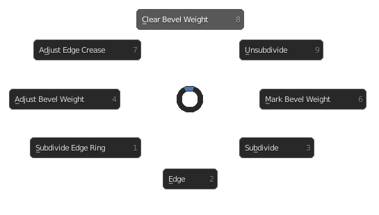

Mesh Edges Menu
Hotkey: Ctrl+E
Functions / Table of Contents
- Clear Bevel Weight
- Unsubdivide
- Mark Bevel Weight
- Subdivide
- Edge Menu
- Subdivide Edge Ring
- Adjust Bevel Weight
- Adjust Edge Crease
Clear Bevel Weight
Sets the bevel weight of selected edges to 0.
Also see: Blender Manual
Unsubdivide
Attempts to un-subdivide selected edges and faces.
Also see: Blender Manual
Mark Bevel Weight
Sets the bevel weight of selected edges to 1.
Also see: Blender Manual
Subdivide
Subdivides selected edges.
Also see: Blender Manual
Edge Menu
Switches the pie menu to the default blender edge menu.
Also see: Blender Manual
Subdivide Edge Ring
Subdivides edges perpendicular to the selected edge ring.
Also see: Blender Manual
Adjust Bevel Weight
Dynamically adjusts edge bevel weight. Bevel weight controls how much a bevel modifier affects a given edge.
Also see: Blender Manual
Adjust Edge Crease
Dynamically adjusts edge crease amount. Crease amount controls how much a subdivision surface modifier a given edge.
Also see: Blender Manual